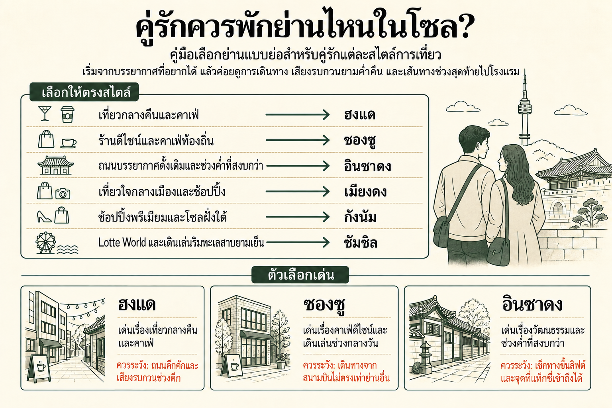

เวลาระหว่างแผนก็มีผลกับทริปคู่
สำหรับทริปสองคน ย่านที่เหมาะมักเป็นย่านที่เข้ากับเวลาที่อยากใช้ร่วมกันระหว่างสถานที่หลัก ไม่ว่าจะเป็นกาแฟตอนเช้า เดินเล่นช่วงค่ำ กินมื้อเย็นใกล้ๆ และกลับโรงแรมได้ง่าย
ฮงแดเป็นฐานที่เลือกง่ายสำหรับคู่ที่ต้องการคาเฟ่ ชีวิตกลางคืน และบรรยากาศช่วงค่ำที่คึกคัก ซองซูเหมาะกว่าสำหรับวันที่เดินช้าลง เน้นร้านดีไซน์ ป๊อปอัป และคาเฟ่ ส่วนอินซาดงเหมาะกับคู่ที่ชอบถนนดั้งเดิม เที่ยวเชิงวัฒนธรรม และช่วงค่ำที่เงียบกว่า
สำหรับทริปสองคน ย่านที่เหมาะมักเป็นย่านที่เข้ากับเวลาที่อยากใช้ร่วมกันระหว่างสถานที่หลัก ไม่ว่าจะเป็นกาแฟตอนเช้า เดินเล่นช่วงค่ำ กินมื้อเย็นใกล้ๆ และกลับโรงแรมได้ง่าย
คู่เดินทางมักได้ประโยชน์จากห้องที่กลับมาแล้วสบาย มากกว่าการไล่หาราคาต่อคืนที่ต่ำที่สุด ขนาดเตียง พื้นที่ใช้สอยจริง และเส้นทางประจำวันสะดวกๆ จะยิ่งมีความหมายหลังเที่ยวเต็มวันติดต่อกันหลายวัน
สนามบินมีผลมากที่สุดในวันมาถึงและวันกลับ รถไฟตรงช่วยได้ แต่การต่อรถ ขนาดสถานี และช่วงเดินสุดท้ายถึงโรงแรมอาจสร้างความต่างมากกว่าเมื่อสองคนกำลังเคลื่อนที่พร้อมกระเป๋าหลังเที่ยวบินยาว
ย่านคึกคักก็พักได้สบายเมื่อโรงแรมถอยจากถนนช่วงค่ำที่วุ่นวายที่สุด บล็อกที่โรงแรมอยู่จริงและทิศของห้องมักมีผลต่อการนอนมากกว่าชื่อย่าน
ทริปคู่ให้ความรู้สึกต่างกันมากตามสิ่งที่เกิดขึ้นหลังมื้อเย็น ฮงแดและอิแทวอนยังคึกคักต่อ ซองซูเหมาะกับวันที่ช้าลงและเน้นคาเฟ่ ส่วนอินซาดงโดยทั่วไปสงบเร็วกว่า
ออกจากโรงแรมแล้วหากาแฟ อาหารง่ายๆ หรือเดินเล่นช่วงค่ำได้ ทำให้ย่านมีคุณค่ามากขึ้นสำหรับทริปคู่ และช่วยให้ช่วงเวลาที่ไม่ได้วางแผนง่ายขึ้นเมื่อทั้งสองคนไม่อยากขึ้นรถไฟใต้ดินอีกเที่ยว
ความต่างชัดที่สุดหลังจบการเที่ยว ว่าคุณอยากมีชีวิตกลางคืนอยู่ใกล้ๆ อยากเดินเงียบๆ เดินทางง่าย หรืออยากได้ย่านที่ใช้เวลาได้แม้ไม่มีแผนตายตัว
| ย่าน | เหมาะกับ | บรรยากาศช่วงค่ำ | การเดินทาง | ข้อแลกเปลี่ยนหลัก |
|---|---|---|---|---|
| ฮงแด | คาเฟ่ ชีวิตกลางคืน และค่ำคืนคึกคัก | คึกคักถึงดึก | AREX ตรง และรถไฟใต้ดินสะดวก | เสียงรบกวนใกล้ถนนเที่ยวกลางคืน |
| ซองซู | ดีไซน์ คาเฟ่ และเดินเล่นกลางวันแบบสบายๆ | ทันสมัยแต่สงบกว่า | เดินทางในโซลดี แต่สนามบินไม่ตรงเท่า | มีประสิทธิภาพน้อยกว่าสำหรับเที่ยวแบบคลาสสิก |
| อินซาดง | วัฒนธรรมและช่วงค่ำสงบ | สงบ | ดีสำหรับโซลเก่าใจกลางเมือง | กิจกรรมดึกน้อยกว่า |
| เมียงดง | ทริปแรกและเที่ยวสะดวก | คึกคักและสะดวก | เข้าถึงใจกลางเมืองยอดเยี่ยม | เน้นนักท่องเที่ยว |
| กังนัม | โซลฝั่งใต้และทริปพรีเมียม | คึกคักแบบเมืองใหญ่ | แข็งแรงฝั่งใต้ของแม่น้ำ | ไกลจากสถานที่ประวัติศาสตร์ใจกลางเมือง |
| จัมซิล | Lotte World และช่วงค่ำริมทะเลสาบ | ทันสมัยและสงบกว่า | แข็งแรงสำหรับโซลตะวันออกเฉียงใต้ | ไกลจากสถานที่ประวัติศาสตร์ใจกลางเมือง |
| อิแทวอน | อาหารและชีวิตกลางคืน | คึกคัก | เชื่อมต่อใจกลางเมืองดี | มีเนินและเส้นทางเดินไม่สม่ำเสมอ |
| มาโป / กงด็อก | สนามบินสะดวกและพักสงบกว่า | เป็นท้องถิ่นและคึกคักพอประมาณ | AREX ตรงจากกงด็อก | สถานที่เที่ยวใหญ่ใกล้ที่พักน้อยกว่า |


ฮงแดเหมาะกับคู่ที่อยากให้ย่านยังเป็นส่วนหนึ่งของทริปหลังเที่ยวเสร็จ คาเฟ่ ร้านอาหาร ดนตรี และชีวิตกลางคืนช่วยให้ช่วงค่ำแบบไม่ต้องวางแผนทำได้ง่าย และสถานี Hongik University ยังมี AREX แบบจอดทุกสถานีตรง
ถนนเที่ยวกลางคืนที่คึกคักที่สุดอาจมีเสียงถึงดึก โรงแรมที่ถอยออกมาไม่กี่นาทีช่วยให้ยังได้คาเฟ่และการเดินทางเหมือนเดิม แต่กลับพักตอนกลางคืนสงบขึ้นชัดเจน
อ่านคู่มือฮงแด →
ซองซูเหมาะกับคู่ที่ชอบใช้เวลาในย่าน มากกว่าวิ่งจากสถานที่ดังหนึ่งไปอีกแห่ง คาเฟ่ ร้านดีไซน์ แฟชั่น ป๊อปอัป และแบรนด์เกาหลีรุ่นใหม่ทำให้สร้างช่วงบ่ายแบบสบายๆ ได้โดยไม่ต้องมีตารางแน่น
สำหรับเที่ยวพระราชวังและสนามบิน ที่นี่มีประสิทธิภาพน้อยกว่าย่านใจกลางหรือฝั่งตะวันตกบางแห่ง ซองซูจึงเหมาะที่สุดเมื่อตัว “ย่าน” เองเป็นหนึ่งในประสบการณ์ที่อยากได้จากทริป
อ่านคู่มือซองซู →
อินซาดงช่วยให้คู่รักเข้าถึงพระราชวัง ถนนดั้งเดิม และพื้นที่ประวัติศาสตร์ที่เดินได้ดีในใจกลางโซลได้ง่าย เหมาะกับทริปที่คาเฟ่ เที่ยววัฒนธรรม และเดินเล่นช่วงค่ำแบบเงียบๆ สำคัญกว่าชีวิตกลางคืน
ย่านนี้สงบเร็วกว่า ฮงแดหรืออิแทวอน และโรงแรมบางแห่งอยู่ตามถนนเล็ก คู่ที่อยากได้ค่ำคืนคึกคักอาจรู้สึกเงียบเกินไป แต่อีกหลายคู่จะมองว่าความสงบนี้คือเหตุผลหลักที่เลือกพัก
อ่านคู่มืออินซาดง →
เมียงดงเป็นฐานที่ใช้งานง่ายที่สุดสำหรับคู่ที่มาโซลครั้งแรก เที่ยวใจกลางเมือง ช้อป และกินข้าวรวมกันได้ง่าย และเปลี่ยนแผนกลางวันได้โดยไม่ต้องเสียเวลาข้ามเมืองมาก
ย่านนี้คึกคักและเน้นนักท่องเที่ยว มากกว่าจะให้ความรู้สึกเป็นส่วนตัวหรือเป็นย่านที่อยู่อาศัย คู่ที่ให้ความสำคัญกับความสะดวกมากกว่าบรรยากาศท้องถิ่นมักยอมรับข้อแลกเปลี่ยนนี้ได้ โดยเฉพาะทริปแรกที่สั้นกว่า
อ่านคู่มือเมียงดง →
กังนัมเหมาะกับคู่ที่มีช้อปปิ้ง ร้านอาหาร คลินิก ธุรกิจ หรือนัดหมายฝั่งใต้ของแม่น้ำฮันอยู่ในแผนแล้ว ย่านยังคึกคักถึงช่วงค่ำและมีอะไรทำมากพอโดยไม่ต้องกลับเข้าใจกลางโซลหลังมื้อเย็น
ถ้าทริปเน้นพระราชวัง อินซาดง และโซลเก่าใจกลางเมือง การข้ามเมืองซ้ำๆ อาจเหนื่อย กังนัมจึงเป็นฐานที่แข็งแรงเมื่อแผนเที่ยวมีเหตุผลชัดเจนให้พักที่นี่
อ่านคู่มือกังนัม →
จัมซิลเหมาะเป็นพิเศษเมื่อ Lotte World, Seoul Sky, ทะเลสาบซอกชน หรือโซลตะวันออกเฉียงใต้เป็นส่วนสำคัญของทริป ทะเลสาบและคอมเพล็กซ์สมัยใหม่ขนาดใหญ่ยังช่วยรวมวันเที่ยวกับมื้อเย็นและเดินเล่นช่วงค่ำไว้ในพื้นที่เดียว
ข้อแลกเปลี่ยนหลักคือไกลจากสถานที่ประวัติศาสตร์ใจกลางเมืองหลายแห่ง คู่ที่วางแผนมาจัมซิลเพียงหนึ่งวันมักยืดหยุ่นกว่าเมื่อพักกลางเมืองแล้วเดินทางมาที่นี่ตามต้องการ
อ่านคู่มือจัมซิล →
อิแทวอนเหมาะกับคู่ที่ต้องการอาหารนานาชาติ บาร์ และช่วงค่ำที่ต่างจากย่านช้อปหลักของโซล และยังเชื่อมกับฮันนัมและพื้นที่อื่นของยงซานได้เป็นธรรมชาติสำหรับร้านอาหาร แกลเลอรี และคาเฟ่
เรื่องที่ต้องคิดมากที่สุดคือภูมิประเทศ เนินและถนนย่อยทำให้โรงแรมที่ดูใกล้บนแผนที่สะดวกน้อยกว่าความจริงได้ โดยเฉพาะตอนมีกระเป๋าหรือหลังเที่ยวมาทั้งวัน
อ่านคู่มืออิแทวอน →
มาโปและกงด็อกเหมาะกับคู่ที่ชอบฐานสงบกว่าและเดินทางสนามบินตรงไปตรงมา กงด็อกมี AREX แบบจอดทุกสถานีตรง ส่วนรอบย่านมีร้านอาหารประจำวันและบรรยากาศช่วงค่ำที่เป็นที่อยู่อาศัยมากกว่า
สถานที่เที่ยวหลักไม่ได้อยู่หน้าที่พัก วันส่วนใหญ่จึงเริ่มด้วยรถไฟใต้ดิน สิ่งที่ได้กลับมาคือวันมาถึงและวันกลับง่ายขึ้น และย่านให้ความรู้สึกผ่อนคลายกว่าเมื่อจบวัน
อ่านคู่มือมาโป / กงด็อก →ขนาดเตียงสร้างความต่างได้มากกว่าชื่อประเภทห้องที่เห็น คู่ที่พักหลายคืนควรรู้ว่าเตียงดับเบิลหรือควีน ที่ระบุไว้จะนอนสองคนสบายจริงหรือไม่
ห้องใจกลางโซลอาจกะทัดรัด และกระเป๋าเปิดสองใบกินพื้นที่พื้นอย่างรวดเร็ว ห้องที่ใหญ่ขึ้นเล็กน้อยอาจทำให้ทริปคู่ที่พักนานสบายขึ้นมาก
รูปแบบห้องน้ำและความเป็นส่วนตัวต่างกันระหว่างโรงแรม รูปฝักบัว อ่างล้างหน้า และการแบ่งพื้นที่มักบอกรายละเอียดใช้งานที่คำอธิบายประเภทห้องไม่บอก
เสียงต่างกันตามทิศห้องและถนนจริงแม้ในโรงแรมเดียวกัน ความเห็นล่าสุดเรื่องรถยนต์ ชีวิตกลางคืน และเสียงในทางเดินมีประโยชน์กว่าการคิดว่าทั้งย่านเงียบหรือดังเหมือนกัน
โรงแรมสมัยใหม่มักมีลิฟต์ แต่เส้นทางจากสถานีอาจยังมีบันไดหรือทางข้ามถนนที่ลำบาก เรื่องนี้เห็นชัดที่สุดในวันมาถึงและวันกลับที่มีกระเป๋า
มาถึงดึกง่ายขึ้นเมื่อรู้เวลาเคาน์เตอร์และขั้นตอนนอกเวลาล่วงหน้า และควรรู้ด้วยว่าหลังมาถึงแล้วยังมีอาหารหรือร้านสะดวกซื้อใกล้โรงแรมหรือไม่
อาหารเช้าโรงแรมช่วยให้เช้าง่าย แต่สำคัญน้อยลงในย่านที่มีคาเฟ่ เบเกอรี และอาหารลำลองดีๆ ใกล้ที่พัก พื้นที่รอบโรงแรมจึงมีความหมายพอๆ กับแพ็กเกจอาหารเช้า
ช่วงเดินจากรถไฟใต้ดินอาจมีเนิน บันได แยกใหญ่ หรือทางเดินใต้ดินที่ระยะบนแผนที่ไม่แสดง เส้นทางนี้ควรดูเป็นพิเศษเมื่อมาถึงพร้อมกระเป๋า
รถไฟสนามบินสะดวกสำหรับบางย่าน ขณะที่รถบัสลิมูซีนหรือแท็กซี่ง่ายกว่าสำหรับบางแห่ง ตัวเลือกที่ง่ายที่สุดขึ้นอยู่กับโรงแรมจริงมากกว่าชื่อย่าน
การฝากก่อนเช็กอินหรือหลังเช็กเอาต์ช่วยให้วันแรกและวันสุดท้ายง่ายขึ้นมาก โดยเฉพาะเมื่อเวลาเที่ยวบินทิ้งช่วงหลายชั่วโมงระหว่างโรงแรมกับสนามบิน
การซักผ้ามีประโยชน์ในทริปยาวและช่วยลดจำนวนเสื้อผ้าที่สองคนต้องขน ร้านซักผ้าใกล้ๆ ใช้งานได้ดีพอๆ กับเครื่องภายในโรงแรม
ถ้ารูฟท็อป เลานจ์ หรือพื้นที่ชมวิวส่วนกลางเป็นเหตุผลที่เลือกโรงแรม เวลาเปิดและการปิดตามฤดูกาลสำคัญ สิ่งอำนวยความสะดวกเหล่านี้มีค่าก็ต่อเมื่อใช้ได้จริงในช่วงที่เข้าพัก
การยกเลิกแบบยืดหยุ่นอาจคุ้มกับส่วนต่างราคาเล็กน้อยเมื่อเที่ยวบิน อากาศ หรือแผนเที่ยวยังไม่แน่นอน ราคาถูกที่สุดแบบคืนเงินไม่ได้ไม่ได้มีประโยชน์ที่สุดเสมอ
ย่านสวยอาจกลายเป็นไม่สะดวกเมื่อสถานที่หลักทุกแห่งต้องเดินทางไกล ฐานที่เหมาะสำหรับทริปคู่มักบาลานซ์บรรยากาศกับสถานที่ที่จะไปด้วยกันจริง
แต่ละย่านมีจังหวะช่วงค่ำต่างกันมาก ย่านดังเรื่องคาเฟ่กลางวันอาจเงียบเร็วกว่าย่านที่ขับเคลื่อนด้วยชีวิตกลางคืนและร้านอาหาร
สนามบินสำคัญ แต่เวลาส่วนใหญ่ของทริปเกิดหลังมาถึง เส้นทางสนามบินที่ไม่ตรงที่สุดเล็กน้อยก็อาจคุ้ม หากย่านเข้ากับอีกสี่หรือห้าวันที่เหลือดีกว่ามาก
เมื่อย่านรู้สึกใช่ การค้นหาโรงแรมจะง่ายขึ้นมาก ขนาดห้อง รูปแบบเตียง เสียง ทางเดินจริงจากสถานี และรายละเอียดใช้งานด้านบน มักเป็นจุดเปรียบเทียบที่มีประโยชน์กว่าราคาต่อคืนอย่างเดียว
ฮงแดเป็นตัวเลือกที่ง่ายที่สุดสำหรับคู่ที่ต้องการคาเฟ่ ชีวิตกลางคืน และช่วงค่ำที่คึกคัก ซองซูเหมาะกว่าสำหรับเดินเที่ยวกลางวันแบบเน้นดีไซน์ ส่วนอินซาดงใช้งานได้ดีสำหรับวัฒนธรรมและคืนที่สงบกว่า
เมียงดงเป็นฐานที่ใช้งานจริงมาก โดยเฉพาะทริปแรก เที่ยว ช้อป และมื้ออาหารจัดรวมกันได้ง่าย แต่บรรยากาศคึกคักและเน้นนักท่องเที่ยวมากกว่าซองซูหรืออินซาดง
ฮงแดเหมาะเป็นพิเศษกับคู่ที่ต้องการคาเฟ่ ดนตรี และชีวิตกลางคืนใกล้โรงแรม การพักห่างจากถนนช่วงค่ำที่คึกคักที่สุดเล็กน้อยช่วยให้นอนสบายขึ้นโดยไม่เสียพลังของย่าน
ซองซูเหมาะกับคู่ที่ชอบคาเฟ่ ร้านดีไซน์ ป๊อปอัป และเดินกลางวันแบบสบายๆ สะดวกน้อยกว่าสำหรับเที่ยวพระราชวังแบบคลาสสิก จึงเหมาะที่สุดเมื่อการใช้เวลาในย่านเป็นส่วนหนึ่งของทริป
แต่ละย่านสร้างบรรยากาศต่างกัน อินซาดงสงบและดั้งเดิมกว่า ซองซูร่วมสมัยและเน้นคาเฟ่ ส่วนจัมซิลให้บรรยากาศสมัยใหม่รอบทะเลสาบซอกชนและ Lotte complex
ฮงแดและมาโป / กงด็อกมักมีตัวเลือกที่มีประโยชน์สำหรับคู่ที่คุมงบ ส่วนเมียงดงอาจคุ้มกับการจ่ายเพิ่มเมื่อความสะดวกกลางเมืองช่วยประหยัดเวลาในส่วนอื่นของทริป
กังนัมเป็นตัวเลือกธรรมชาติเมื่อโรงแรมพรีเมียม ร้านอาหาร และแผนฝั่งใต้ของแม่น้ำฮันอยู่ในทริปอยู่แล้ว โรงแรมหรูมีในย่านอื่นด้วย ดังนั้นย่านยังควรเข้ากับเส้นทางประจำวัน
ใกล้รถไฟใต้ดินมีประโยชน์ แต่ทางออกจริงและช่วงเดินสุดท้ายก็สำคัญ เส้นทางที่ไกลกว่าเล็กน้อยแต่มีลิฟต์และถนนง่าย อาจสะดวกกว่าทางสั้นที่มีบันไดหรือเนินชัน
ฮงแดเป็นตัวเลือกรอบด้านที่ง่ายที่สุดเมื่อคาเฟ่ ชีวิตกลางคืน และช่วงค่ำที่คึกคักสำคัญที่สุด ซองซูเหมาะกว่าสำหรับทริปช้าลงที่สร้างรอบดีไซน์ คาเฟ่ และการเดินเที่ยวกลางวัน ส่วนอินซาดงเหมาะกับคู่ที่ต้องการถนนประวัติศาสตร์และคืนที่สงบกว่า เมียงดงยังเป็นทางเลือกที่ใช้งานจริงเมื่อการเที่ยวที่ง่ายและความสะดวกในแต่ละวันสำคัญกว่าบรรยากาศของย่าน